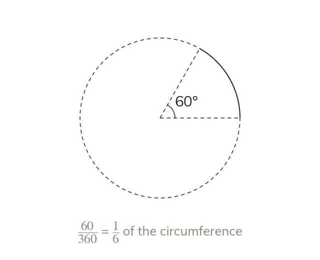

An arc is a fraction of the circumference
An arc is part of the circle's edge. Its length is the same fraction of the circumference as its angle is of 360°.
An arc is the part of the circle's edge between two radii. It takes the same fraction of the circumference as its angle takes of 360°, so its length is θ360 × π × d.